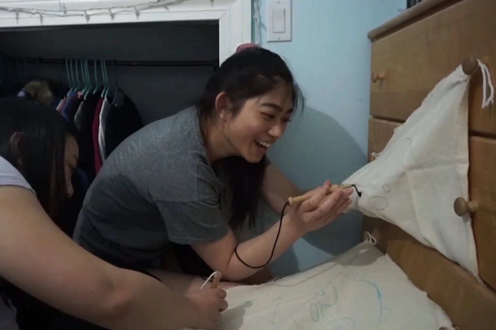
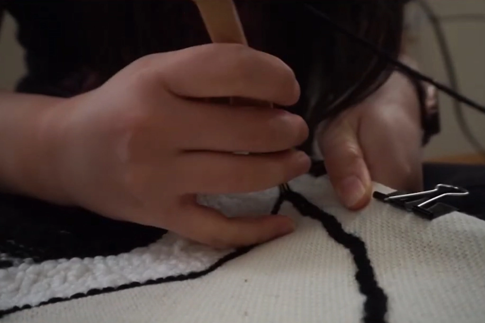
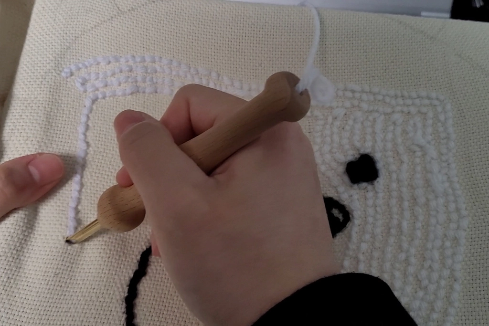
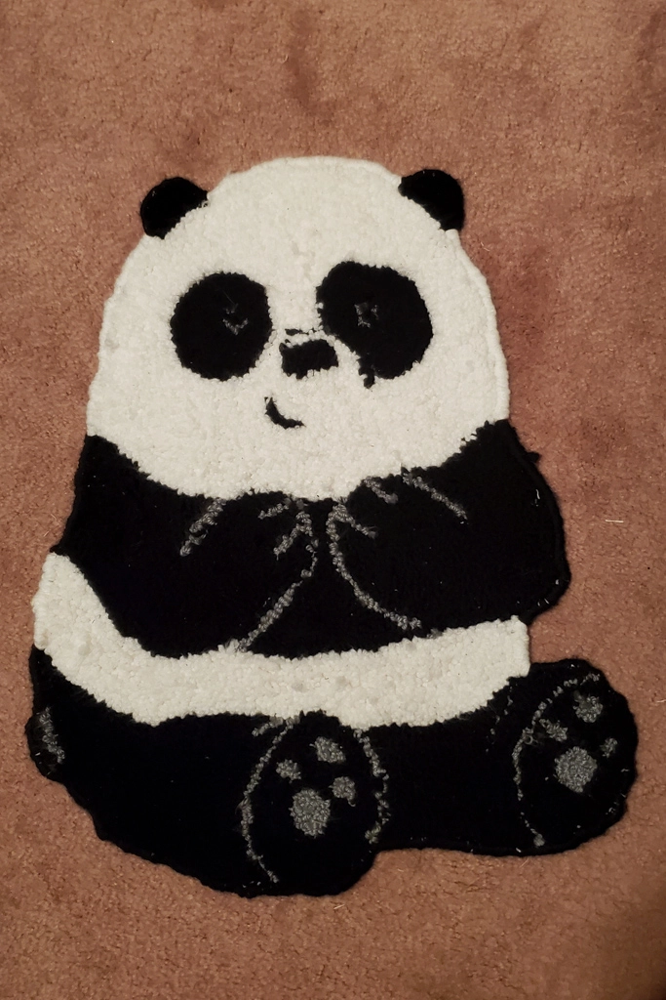
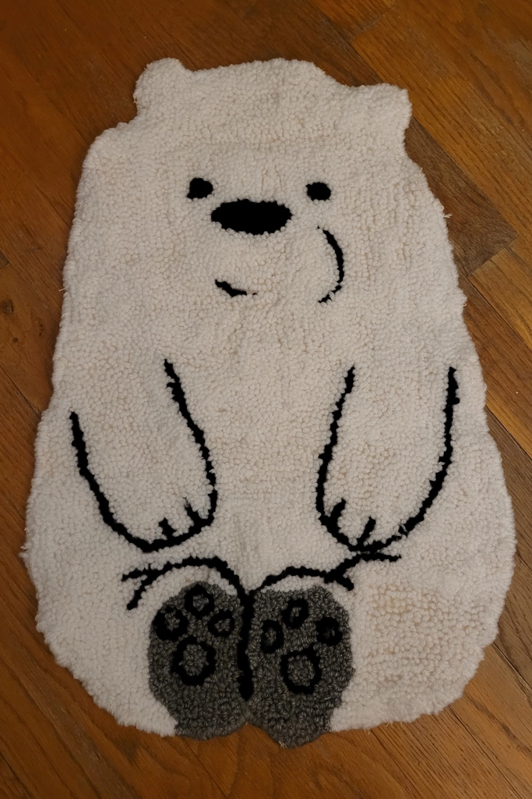

DIY Punch Needle Rugs
Apr 11 - Written by Bonnie and Emily
If you’ve been on the internet lately, you’ve likely seen this trend going - punch needle rugs.
If you don't know what a punch needle rug is, it’s very much like it sounds. It’s a method of rug making where you have a punch needle that's threaded with some yarn and you punch a bunch of holes into some fabric creating a rug. After seeing a lot of these rugs online and seeing how simple it is to do, we thought we’d give it a shot.
Without doing a whole lot of research, Emily ordered a punch needle set that had all the supplies we needed to make the rug, but what she didn’t realize was that the cloth in the kit was tiny. Bonnie calls it a handkerchief but Emily thinks you could make a mini rug with it or if you don't make a rug, you could make a cute little piece of wall decor. Aside from the punch needle, you will need a large needle, some monks cloth, yarn, and a frame thats big enough to encompass your cloth. We did not think that far and didnt have a frame that worked with our design so we improvised.
We started by trying to tie the cloth to various objects but when that failed, we resorted to using some old picture frames as that was the closest we could get to a wooden frame. A lot of people use old canvas frames, but we didn't have that either so we made due with the cheap picture frames. Now once we were finally all set up, we began punch needling.
Or so we had thought...
Since Bonnie did more research than Emily did on how to actually do this, she followed her lead but after trying to make a row, we realized something was off. Not only was the yarn not staying in place as we were working, this set up we had going wasn’t working. From there, Emily thought of a new idea, clothes hangers! Since they resembled a frame, she thought this could work out, but after thinking about ways to attach the cloth to the frame, this idea was scrapped. With no good ideas, we thought some more until Emily remembered she had some old picture frames. Trial and error later, this became the best option yet as it was the closest and sturdiest item we had to the wooden frames everyone else used. Now that we had the frame situation sorted, all we needed was to figure out why our punch needling wasn’t working.
After further research, we realized we had forgotten a crucial step of looping the yarn into the hole at the end of the punch needle. Once that was fixed, we began to have some success in creating our rugs.
Once we began, we knew this was going to take awhile, so we set out to work punching holes into the cloth. This whole process of punching holes and moving the cloth over on the frame after we finished the section took hours. Don’t be fooled by others, this is a long, sometimes tedious, and sometimes relaxing process. If you make one yourself, we highly recommend getting a frame that fits your entire design as it will make your life that much easier. We also recommend making sure your cloth is nice and taut as that will make punching the holes easier.
When we both finished our rugs, we were so happy to be done with them as all the hard work was about to pay off getting to see the finished product. However, we still had another step to complete. We had to cut our rug out from the monk's cloth and then add a border so that it gives the rug that completed look. If you thought punching holes was long and tedious, this next step was far worse. Having to take a needle and loop around the entire rug was far more tedious than making the rug and on top of that, the monks cloth sheds very easily. All the loose threads are a pain to deal with but that may have also just been a problem for us and the quality of cloth we purchased.
Once we finished the border, we were officially done with our rugs!! Many hours later and we were finally able to share our creations with one another. Now, many of you don't know that we relate a lot to We Bare Bears and we can often see ourselves as one of the bears. Bonnie is PanPan and Emily is Ice Bear thus we each created the corresponding bear that we relate most to. If you’re wondering where Grizz is, Grizz as a rug may come in the future but for now, it will just be PanPan and Ice Bear.


Overall we’re both satisfied with our rugs, they turned out really well for our first attempt. Besides the recommendations we mentioned above and some minor design changes, there isn’t much we would do differently. We do have to say that you need a lot less yarn than you would expect to use. We purchased 5 balls of yarn but neither one of us made it through a full ball of yarn. That being said, it does also depends on the size of rug you are making because ours are roughly bath mat sized.
Would we do this again? Probably, it’s a fun project to do and it doesn’t require much thought once you get started and get into it. You can almost sit there and mindlessly punch holes while you watch a movie or listen to music.